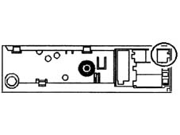
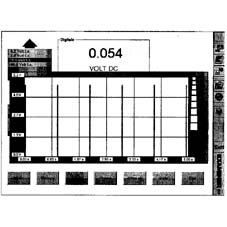
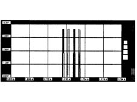
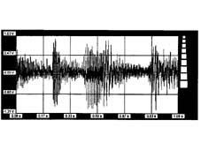
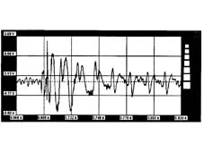
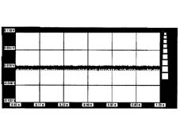

5580PH Check on operation of CD changer and radio module
- Path
- Test > 55 ELECTRICAL EQUIPMENT > 5580 SPECIAL ACCESSORIES > 5580P connect panel > 5580PH Check on operation of CD changer and radio module
- Kind
- test / check procedure
- Applies to
- all engines; all production periods
- Interactive page
- https://sloeber94.github.io/elrnDB-a147/en/#/3026078
Applies to: all engines; all production periods
Internal diagnosis between CD changer and radio
Introduction.
To carry out this test correctly any music Compact Disc must be inserted in the holder in the luggage compartment (correctly positioned).
After having connected at least the Examiner negative supply lead to the vehicle earth and having switched it on, enter the Voltmeter ambient and connect the voltmeter lead (black probe) to the vehicle chassis.
Switch on the radio and connect the red voltmeter probe to the supply leads, positive first and then negative, at the radio output and check that the supply for the CD-Changer is correct.
After having selected a music Compact Disc track, position the red voltmeter probe alternately at the radio output signal leads (pins 13 and 14 of the blue connector).

Select 20 Volt and 5 seconds as the end of scale on the Examiner and press the Start button; the values that appear should be assessed with a 20% tolerance approx;

To improve the display, show a single pulse using the zoom which will be similar to the following image;

After the correct enabling sent by the radio to the CD-Changer it is possible to check whether the reproduction of the music track is present at the CD-Changer output. Position the red voltmeter probe alternately on the radio audio input leads (pins 19 and 20 of the blue connector). With the values selected previously, press the 'Start' button on the Examiner. The values of the image which appears should be assessed with a tolerance of around 20%; the image should be similar to the following.

When the graphic trend of the voltage is amplified, the signal displayed will be similar to the following.

The presence of this graph, displayed at the CD changer output and sent to the radio amplifier, indicates that the player is working.
If the audio signal to the radio is not present, check that the enabling signal (described previously) coming from the radio is present at the CD-Changer connector.
If the signal measured is as follows; the CD Changer, the radio or the wiring is faulty
